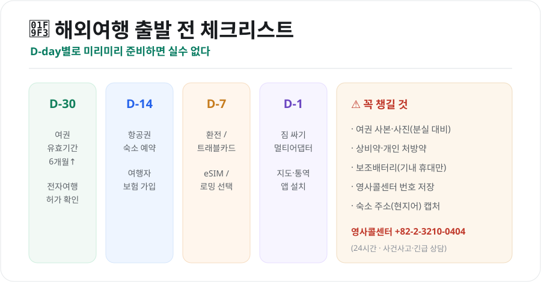
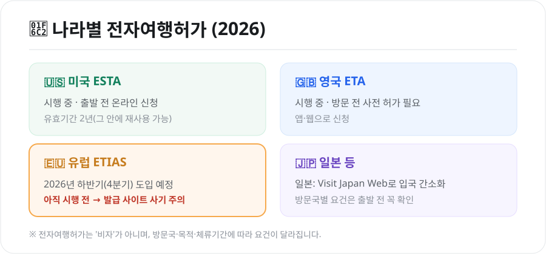

해외여행 꿀팁 총정리 — 출발 전 준비부터 통신·환전·안전까지
광고 · 반응형
설레는 해외여행, 준비가 반입니다. 여권 유효기간을 놓쳐 출국장에서 막히거나, 통신·환전을 잘못 골라 돈을 더 쓰는 일은 조금만 알아두면 피할 수 있습니다. 출발 전부터 현지까지, 꼭 필요한 꿀팁만 모았습니다.

1. 출발 전 서류 — 여권과 전자여행허가
여권 유효기간 6개월 이상
많은 나라가 입국일 기준 여권 유효기간이 6개월 이상 남아 있을 것을 요구합니다. 남은 기간이 애매하면 미리 재발급하세요.
전자여행허가(ETA) 확인
비자가 필요 없는 나라라도 사전 전자여행허가를 받아야 하는 경우가 늘고 있습니다.

- 미국 ESTA: 시행 중. 출발 전 온라인 신청(유효기간 2년)
- 영국 ETA: 시행 중. 방문 전 앱·웹으로 사전 허가
- 유럽 ETIAS: 2026년 하반기(4분기) 도입 예정. 아직 시행 전이라 발급받을 수 없으니, "지금 발급해준다"는 사이트는 사기를 의심하세요.
- 일본: Visit Japan Web으로 입국 심사·세관을 간소화
전자여행허가는 '비자'가 아니며, 방문국·체류기간에 따라 요건이 다릅니다. 반드시 공식 사이트에서, 출발 며칠 전 여유 있게 신청하세요.
2. 통신 — 로밍 vs eSIM vs 포켓와이파이
현지에서 인터넷을 쓰는 방법은 크게 세 가지입니다.
| 방법 | 장점 | 단점 |
|---|---|---|
| 데이터 로밍 | 번호 그대로, 가입 간편 | 상대적으로 비쌀 수 있음 |
| eSIM | 저렴·즉시 개통, 앱으로 설치 | eSIM 지원 단말기만 가능 |
| 포켓와이파이 | 여러 명·기기 공유 | 기기 대여·충전·반납 번거로움 |
- 혼자 여행 + 최신 스마트폰이면 eSIM이 가성비가 좋습니다.
- 여러 명이 함께라면 포켓와이파이를 나눠 쓰는 것도 방법입니다.
- 전화·문자를 그대로 받아야 하면 로밍이 편리합니다.
3. 환전·결제 — 수수료를 줄이자
- 트래블 체크카드(해외결제 특화 카드)를 활용하면 환전 수수료를 아끼고 현지 ATM 출금도 편합니다.
- 현지 통화로 결제하세요. 해외에서 "원화(KRW)로 결제할까요?"라고 물으면 거절하는 게 이득입니다(원화결제 DCC는 수수료가 더 붙습니다).
- 소액 현금은 팁·시장·교통 등을 위해 조금만 준비하고, 큰 금액은 카드로 쓰는 것이 안전합니다.
광고 · 반응형
4. 짐 싸기 — 규정과 필수품
- 기내 반입 액체: 용기당 100ml 이하, 1L 투명 지퍼백 1개에 모아서. 큰 화장품·세면도구는 위탁수하물로.
- 보조배터리·라이터: 위탁수하물 금지, 반드시 기내 휴대(용량 제한 확인).
- 멀티 어댑터(돼지코): 나라마다 콘센트 규격이 다릅니다. 유럽·미국·일본 등 방문지에 맞는 어댑터를 챙기세요.
- 상비약·처방약: 현지에서 구하기 어려울 수 있으니 개인 약은 넉넉히. 처방약은 처방전 사본을 함께.
5. 현지·안전 — 이것만은 기억
- 영사콜센터 저장: 사건·사고나 긴급 상황 시 +82-2-3210-0404(24시간). 여권 분실·도난 시에도 도움을 받을 수 있습니다.
- 여권 사본·사진을 따로 보관하면 분실 시 재발급이 빠릅니다.
- 소매치기 주의: 관광지·대중교통에서 가방은 앞으로, 뒷주머니 지갑은 피하세요.
- 숙소 주소를 현지어로 캡처해두면 택시·길 찾기에 유용합니다.
- 여행자보험은 치료비·휴대품 손해·항공 지연까지 대비하니, 짧은 여행이라도 가입을 권합니다.
6. 소소하지만 유용한 팁
- 항공권 유류할증료는 '발권일' 기준이라, 인하 흐름이면 발권을 서두르지 않는 것도 방법입니다.
- 입국 심사를 대비해 왕복 항공권·숙소 예약 내역을 캡처해두면 좋습니다.
- 구글 지도 오프라인 저장, 번역 앱을 미리 설치·다운로드하세요.
- 시차가 큰 지역은 도착지 시간에 맞춰 기내에서 수면을 조절하면 시차 적응이 쉽습니다.
마무리
해외여행의 실수는 대부분 준비 단계에서 예방할 수 있습니다. 여권·전자여행허가부터 통신·환전·보험까지, 위 체크리스트만 따라가면 출발 당일 당황할 일이 줄어듭니다. 안전하고 즐거운 여행 되세요!
본 글은 공개된 자료를 바탕으로 정리한 참고용 정보입니다. 비자·전자여행허가·기내 반입 규정 등은 국가·항공사·시점에 따라 다르므로, 출발 전 방문국 공관·항공사의 최신 안내를 반드시 확인하시기 바랍니다.
참고 자료 - 외교부 해외안전여행(영사콜센터 안내) - 유럽 ETIAS·미국 ESTA·영국 ETA 공식 안내
📎 함께 보면 좋은 글


광고 · 반응형
본 포스팅은 공개된 뉴스와 자료를 바탕으로 편집·정리한 콘텐츠입니다.
← 목록으로